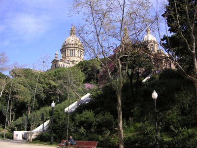

2007-01-12 - ЧТО Я ВИДЕЛ В БАРСЕЛОНЕ
Вот, слетал я давеча в Барселону, поработал там Дед-Морозом, пошлялся по городу, попил вина, покурил травы и всё такое. Две недели там прозависал, город исходил вдоль и поперёк, изучил основательно. Большой такой город, столица Каталонии, жителей миллиона два, есть метрополитен, русский ресторан, аквариум с океанариумом, собор Святого Семейства, музей Хуана Миро и много чего ещё. Сейчас расскажу обо всём по порядку.
АКВАРИУМ с океанариумом и подводным туннелем – ну, в общем, есть на что посмотреть. Мне он напомнил преисподнюю: мрачные подземелья, в которых зависают уродливые и неизлечимо серьёзные существа серого цвета. Ничем не интересуются, ни на что не реагируют, как будто не в воде плавают, а в растворе аминазина. Акулы даже хавать самостоятельно разучились: аквалангист ей карася прямо в рот засовывает, а она его в зубы возьмёт и тусуется с ним минут десять, вспоминает, что с ним делать. Хотя, с другой стороны, это может быть типа рай такой: никто ведь никого не щемит и не хавает, всем спокойно, все довольны, все молчат и отдыхают… Одни пингвины галапагосские возятся и шебуршатся в своём застеколье – вот, по ним сразу видно, что им там просто офигенно.
БАЛЬМЕС – улица, на которой я жил. Не сказать, чтобы главный проспект, но всего в двух шагах от РАМБЛЫ. На Бальмесе расположен клуб Balmes School, в котором играют фанки, рэггей и рагга-джангл; но он сильно молодёжный и стопроцентно испаноязычный. Проходил я мимо него много раз подряд, но внутрь проникнуть так и не решился. Вряд ли туда пустят пожилого такого пацана без подруги; а если и пустят, всё равно непонятно, что я буду там делать. Всё-таки, без языка трудновато как-то.
Бальмес зимой. Чуть выше, чем где я жил
БАРСЕЛОНА. Ну, вот, представьте себе Киев, в котором вместо Днепра Средиземное море, вместо каштанов пальмы, и горы не посреди города понатыканы, а расставлены по краям аккуратненько так, чтобы по центру можно было расслабленно бродить, а не карабкаться. Добавьте гламурности, сделайте кварталы восьмиугольными, замените украинцев КАТАЛОНЦАМИ, а сало ХАМОНОМ – и вот вам Барселона. На заграницу совсем не похоже, только ЕДА немножко непривычная и язык непонятный. Но если его понимаешь, тогда вобще как дома.
Вид на Барселону с верхней террасы парка Гуэль
ВЕЛОСИПЕДЫ – не так много, как в Голландии, но всё равно до фигищи. Рельеф там не простой, но и велосипедисты не простые: для некоторых на ЭТО ТИБИДАБО подняться – это типа утренней прогулки (сам видел аж четверых таких героев). Велики активно воруют, даже могут разобрать прямо на стоянке, поэтому некоторые велосипедисты не только пристёгивают его очень серьёзным замком, но и снимают с него седло, а иногда и переднее колесо. Иначе это может сделать кто-то другой, а потом пиши пропало. Мелкие кражи в БАРСЕЛОНЕ не расследуют принципиально.
Массовый молодёжный велопробег 28 декабря 2006 года. В Барселоне такое не каждый день
ВИНО – и национальная гордость, и предмет культа, и обязательная тема для застольных бесед. Не врубаясь в эту тему, невозможно приобрести репутацию культурного человека. Однако вина, которые там пьют культурные люди, в СНГ просто не ввозятся; а самые лучшие вообще не вывозятся за пределы Каталонии. Названий тысячи, разобраться в них нереально, но можно ориентироваться по цене. Впрочем, даже самое дешевое местное вино не может быть ни плохим, ни вредным для здоровья.
ГАНДЖА. Сразу по приезде мне подарили десять термоядерных пионерок, а потом ещё большой кулёк шишек. Сперва была Белая Вдова, потом Мазар, всё выращено в каталонском аутдоре, но на улице такого не купишь. Это надо знать людей, и надо, чтобы люди тебя тоже знали. А шишки такие, что если, например, пожарить полграмма на сливочном масле – всего лишь полминутки, дольше не надо – то это порция часов на восемь, причём два или три часа идёт жёсткая психоделика грибного типа, прямо не знаешь, куда от неё деваться. В таком-то состоянии я увидел КАВАЛЬКАДУ КОРОЛЕЙ, и понял наконец, зачем я приехал в БАРСЕЛОНУ.
Это Белая Вдова. Реально
ГАУДИ для Каталонии как Пушкин для России: главный национальный гений и неоспоримый эталон. Его самое известное творение – собор Святого Семейства – сейчас на реставрации, так что оценить его как следует я не смог. Мне он показался – ну, как будто каталонскому человеку приснился собор Василия Блаженного, и он потом попытался создать что-то похожее, но покрупнее и побогаче. Потом я сходил в парк Гуэль и тоже не впечатлился. Ну да, красивенько так – но ничего за этой красотой не чувствуется, кроме стремления сделать красиво. И всё равно, горы вокруг БАРСЕЛОНЫ в десять раз живописнее, а восход СОЛНЦА вобще такой, что куда там тому Гауди. Так стоило ли огород городить?
Знаменитый собор Святого Семейства. Вот так он сейчас выглядит...
ЕВРЕЙСКАЯ ГОРА (она же Montjuic). Если выйти к порту и стать лицом к морю, она будет справа. Там когда-то жили евреи, а потом была крепость, защищавшая БАРСЕЛОНУ от морских набегов – она до сих пор сохранилась, и коллекция пушек на её стенах весьма впечатляющая. А потом рядом с крепостью устроили ботанический сад и несколько парков, а на противоположном склоне горы построили королевский дворец, Национальный дворец и ещё несколько дворцов, а ещё с другой стороны не то раскопали, не то воссоздали греческий театр, а чуть выше построили музей Хуана МИРО – в общем, где-то четверть всех барселонских достопримечательностей находится на Еврейской горе. Но при этом вид у неё не зализанный до блеска, а слегка диковатый и неухоженный – не в такой степени, чтобы там были выбитые ступеньки или осыпающиеся кирпичи, но ровно настолько, чтобы можно было чувствовать себя как бы на природе. Там очень приятно раскуриваться, а потом есть куда пойти. Правда, если зайти далеко, то можно случайно выйти из Барселоны: за Еврейской горой она кончается.

Еврейская гора, вид со стороны дворцов
ЕДА каталонская очень своеобразная. Меню обычно по-испански (либо вообще по-каталански), наполовину состоит из непонятных слов, которых нет в разговорнике. В блюдах тоже случаются непонятные рыбы, травы и морские гады. Говорят, что всё это практически безопасно для здоровья, а иногда даже вкусно. Охотно верю; но запахи этой странной еды почему-то не вызвали у меня желания познакомится с ней поближе. Да и не было в том особой нужды: повсюду продаются фрукты и оливки, а ещё итальянцы пекут отличную пиццу, а ещё есть бокадильо - такие длинные сэндвичи со всем на свете, а в МОСКВЕ можно поесть нормального борща, котлет и селёдки под шубой. Ну и, конечно же, родные наши Макдональдс и Ростикс тоже в городе присутствуют.
Это не в ресторане, а в гостях. Слева от меня в миске - печёные артишоки. Вкусные
ИГРАЛЬНЫЕ АВТОМАТЫ есть в любой забегаловке, но совать в них деньги не рекомендуется: с первой же монетки включается автоматический режим, барабаны лихо крутятся сами по себе и очень быстро утилизируют любую сумму. Нормальные автоматы только в казино.
ИНТЕРНЕТ – вообще чудо! Только-только включил WiFi – аж тут мне сразу пять сетей, и две из них совершенно бесплатные. Скорость даже повыше, чем у моего московского СТРИМа, любое видео на YouTube можно смотреть он-лайн без затыков. В общем, спасло меня только то, что в России сейчас каникулы, и половина Рунета отдыхает в офф-лайне. Иначе покинуть интернет было бы проблематично.
ИСПАНСКИЙ ЯЗЫК в БАРСЕЛОНЕ хорошо понимают, но почти не употребляют. Местные жители говорят на каталанском – в принципе, тот же испанский, но слегка не совсем. Не зная испанского или каталанского, в Барселоне жить неуютно: по-английски можно разговаривать только с туристами, а местные продавцы и официанты обычно понимают только очень простые слова, и то не с первого разу. То есть, перед тем, как сесть в самолёт, есть смысл заучить пару сотен испанских слов и выражений. Кстати, меня с моим английским часто принимали за немца – и поделом, наверно.
ИШ (обычно пишется Ish) - олдовый человек с www.rastaman.tales.ru. Живёт в БАРСЕЛОНЕ уже давно и всё про неё знает. Он меня туда и пригласил. Кто хочет в Барселону – обращайтесь к нему, он всё объяснит и во многом поможет. Его можно и найти на Болтательном форуме и в других местах упомянутого сайта.
КАВАЛЬКАДА КОРОЛЕЙ. На самом деле, это не короли, а волхвы евангельские, которые принесли дары младенцу Иисусу. Но католики считают, что это были не просто волхвы, а короли-волшебники; поэтому барселонский карнавал волхвов называется "Кавалькада Королей". Короли приплывают в город 5 января где-то около четырёх часов, и сразу идут навестить царя Ирода, то бишь местного мэра. А потом движутся через весь центр – не по главному проспекту, а по очень хитрой траектории – к Волшебному фонтану на ЕВРЕЙСКОЙ ГОРЕ, по дороге разбрасывая конфеты, раздавая шарики и игрушки и всяко веселя народ. Вот такой фестиваль бывает в БАРСЕЛОНЕ, и я как раз на него попал. И это было первое в моей жизни массовое шествие, которое не просто меня обрадовало, а вобще дало пережить всеобщий восторг и ликование, почувствовать себя счастливой частичкой многотысячной массы, по-детски верящей в сказки и чудеса. Короли ехали на огромных платформах, типа таких передвижных сценах с навороченными декорациями (например, большой такой верблюд непонятно из чего, который головой кивал) и мощными колонками. За каждой платформой двигалась колонна подростков в фантастических костюмах – наверно, из каких-то местных сказок и книжек, но я этих тем не знаю, а потому воспринимал их как чистый сюрреализм. И они не просто двигались – они танцевали очень хитрые танцы, всё время меняясь местами; а короли тем временем произносили речи, на которые публика очень живо реагировала. Зрители стояли плотной стеной по обе стороны улицы, на многих были короны (их в тот день продавали по всему городу). Я думал, что королей будет трое – но за третьей платформой пошла четвертая, за ней пятая… а потом я просто сбился со счёта, перестал думать и потерялся. Из трипа меня выдернул звонок мобильного: Снегурочка Света из ресторана МОСКВА напомнила мне про завтрашний утренник. Очень кстати: ещё немного, и я бы про него забыл. Домой я шёл не в настроении: всё думал, каково мне будет валять дурака перед детьми, которые вчера видели такое. Но ничего, утренник прошёл отлично. Возможно, всё дело в том, что Кавалькаду барселонские дети видели много раз, а русского Дед-Мороза с настоящей бородой впервые в жизни.
Кавалькада 2005 года, полный фотоотчёт здесь. Кавалькаду-2007 я не фотографировал, не до того было
КАТАЛОНЦЫ очень похожи на москвичей, особенно молодые. Та же манера одеваться (бюджетно, но с претензией на что-то), то же преобладание тёмных цветов, и даже такие же арафатки на шеях. Так же много читают (иногда даже на ходу), так же серьёзно выглядят и так же искренне улыбаются, общаясь друг с другом. Более взрослые – полноватые мужики и тётки, одеты прилично по-взрослому, однако при этом не стесняются ездить на МОТОРОЛЛЕРАХ и даже на велосипедах. Никуда не спешат (если не за рулём), всегда слегка пьяны (ВИНО пьют постоянно, как сок или воду), иногда подкурены. Очень любят стоять в очередях, особенно когда распродажа или новый американский фильм (сам видел очередь в кинотеатр на полтора квартала). ИШ рассказывал, что они лет до сорока ничем серьёзным не занимаются, а считаются как бы молодёжь. И если ты слишком молодо выглядишь, они с тобой ни о чём серьёзном говорить не будут, а спросят: "Молодой человек, где ваш папа?". Чтобы делать там успешный бизнес, надо для начала набрать килограмм пять-десять сверх нормы – а в жарком климате это не так-то просто.
МЕТРО легко перепутать с подземным переходом или автостоянкой: никаких вестибюлей нет, просто скромная лесенка под землю и едва заметный красный ромбик с буквой М. План его как будто навеян рисунками Хуана МИРО: попробуй сосчитай, сколько там линий, и попробуй разгляди, куда какая ведёт. Внутри ничего лишнего – только рельсы, перроны и подземные коммуникации. Поезда не длинные, и страшно себе представить, какая давка была бы в этих поездах и туннелях, если бы пассажиров там было хотя бы как в Киеве. Но там просторно: местные жители предпочитают МОТОРОЛЛЕРЫ, а туристов возят на автобусах. Я и сам в метро спускался всего раза два или три, а так всё больше пешком ходил.
Барселонское метро: ни одной прямой линии. Даже если увеличить эту схему раза в три, разобраться в ней всё равно непросто
Хуан МИРО родился в БАРСЕЛОНЕ, поэтому считается каталонский художник. У местных к нему отношение неоднозначное. Им как бы гордятся – но без восторгов и придыханий. Он ведь не отдал всего себя Барселоне, как маэстро ГАУДИ, а наоборот, при первой же возможности свалил в Париж и там прозависал полжизни, распродавая свои картины по всему миру. Рисовать он вообще не умел, и характер имел прескверный, и идеи у него были престранные, в барселонский пейзаж они до сих пор не вписываются. И музей его на ЕВРЕЙСКОЙ ГОРЕ называется не "музеем", а "фондом". Меня там так нахлобучило, словами не передать! Увидел и прочитал в его картинах много посланий, адресованных только мне и никому больше, как будто они тут специально меня ждали, вот такое ощущение было. Даже в чём-то и посильнее, чем на КАВАЛЬКАДЕ.
МОРЕПРОДУКТЫ (moriskos) надоедают на третий день, а на четвертый уже и смотреть на них невозможно. Хотя они и по качеству, и по ассортименту неповторимые: вот, например, устрицы живые просто лежат большой кучей за смешные деньги, а рядом навахи, пучками связанные (это такие длинные мидии, похожие на палочки, и с обоих концов торчит моллюск), а ещё большие такие ракушки плоские с очень серьёзным рапаном внутри, грамм 70 чистого мяса – эти дорогие, считается деликатес. А всякие обычные мидии, кальмары, каракатицы – это вобще для бедных. При мне в испанском кафе один мужичок, по виду малобюджетный, точил реального осьминога – а я сидел рядом и изо всех сил старался туда не смотреть, чтобы не стошнило. Было это как раз на четвертый день моей жизни в Барселоне.
МОСКВА – русский ресторан в центре Барселоны, прямо напротив университета. Шеф-повар у них итальянец, поэтому русская кухня получается с лёгким иностранным акцентом – например, шубу там пропитывают каким-то рыбным соусом сверху донизу, а овощи для борща не пассеруют вообще. Но это мелочи, а в общем всё очень вкусно и экзотично, КАТАЛОНЦАМ нравится. В ресторане на всех экранах крутится русское МТВ, продаются наши книги и диски – кстати, и "Растаманские сказки" теперь там есть, можно спрашивать. Я там на Новый Год и православное Рождество Дед-Морозом работал, было весело.
Русский Новый год в ресторане "Москва"
МОТОРОЛЛЕРЫ – основной городской транспорт. Все по-серьёзному обустроены, с номерами обязательно, а ездят на них обязательно в шлемах и никак иначе. Разнообразие этих устройств поражает воображение: есть и настоящие древние раритеты, и современные эксклюзивные модели, и мини-автомобильчики на трёх колёсах… Днём весь центр города превращается в выставку мотороллеров, мопедов и мотоциклов; а ездят они прямо летают, аж страшно за них становится. Но ничего, ни одной аварии за всё время я не видел.
ОРУЭЛЛ напомнил о себе неожиданно, но в тему. Дело было так: однажды я свернул с РАМБЛЫ влево и пошёл пошляться по старым кварталам, где заблудился почти сразу же. Набрёл на смартшоп, в котором бесплатно раздавали голландские газеты про коноплю, и дальше шёл уже с газетой, листая её на ходу. Человеческий пейзаж, между тем, изменился к лучшему: куда ни глянь, везде хиппи или РАСТАМАНЫ. "Вот славное местечко!" – подумал я и присел на углу небольшой площади, где никаких цывильных людей вобще не наблюдалось. Рядом сидел растаман с герлой, я с ними раззнакомился и раскурился. Оказалось, итальянцы; чувак по-английски ничего не понимает, а герла болтает вполне сносно. Они в Барсе уже четыре дня, у них деньги стырили, ночевали они два дня на стриту, сейчас куда-то вписались. Подошли ещё люди, скрутили ещё джойнт – и вдруг все зашептали что-то вроде "полис! полис!", резво подорвались и разошлись в разные стороны. Я тоже разошёлся в произвольную сторону, по дороге наткнулся на обтрёпанного бородатого юношу со славянским акцентом. Думал, русский – оказалось, поляк. Дал ему две евры, он сразу же побежал с ними на магазин. Полисы стояли на противоположном углу площади – это я, выходит, прямо к ним и пошёл. Ну, да ничего: я к этому моменту был совсем пустой. Покидая площадь, посмотрел, как она называется – и аж закашлялся. Ничего себе совпадение: Placa de George Orwell! Сейчас перечитываю и не понимаю, почему оно меня так вставило – но тогда это был таааакой вруб…
ПАМЯТНИКИ в Барселоне не сильно интересные. Преобладает классицизм такой доморощенный – всякие полуголые тётеньки и дяденьки, изображающие что-то античное или аллегорическое. Встречается, правда, кое-что своеобразное – например, пупсы, седлающие черепаху, или вразвалку лежащий жираф – но это редко. В основном, такое, что пройдёшь и не заметишь.
ПАЭЛЬЯ – знаменитая испанская еда. Сковородка фасоли (или риса) со специями, на которую сверху кладут всякую фигню типа рыбы или мяса. В БАРСЕЛОНЕ паэлья чаще всего с МОРЕПРОДУКТАМИ: прямо так и лежат на ней нечищеные креветки или мидии в ракушках. Я её один раз попробовал, больше не захотелось. Даже если её очень изощрённо приготовить, это всё равно будет нехитрый рабоче-крестьянский хавчик, типа как у нас гречка с котлетой. А шуму-то вокруг неё! а цены-то какие ломят!
ПЕРЕКРЁСТКИ в Барселоне восьмиугольные. То есть, в центре города большинство кварталов со срезанными углами: оно вроде бы помогает машинам разъезжаться без проблем, да и места для парковки больше. Для укуренного пешехода это реальное попадалово: идёшь себе идёшь, а тут вдруг угол, но переход от него только влево, а вперёд перехода нету. И стоишь тупишь, пока сообразишь, что угол-то не прямой, а тупой, то есть не настоящий. И тогда уже идёшь до следующего тупого угла, где уже должен быть прямой переход. Но пока до него дойдёшь, легко можно забыть, куда шёл – например, на витрину завтыкать или о чём-то своём отвлечься. И по итогу снова оказываешься на тупом углу с переходом налево… Ну, короче, укуренным по центру лучше не шастать, а лучше это делать в старых кварталах возле порта. Или на ЕВРЕЙСКОЙ ГОРЕ.
ПИВО в Барселоне примерно как в России: местное никакое вобще, а Хайнекен вполне себе Хайнекен. Тамошний народ предпочитает ВИНО, и правильно делает. Однако при этом отмечен такой вот феномен: Балтика №9 в ресторане МОСКВА продаётся быстрее чем завозится, и раскупают её именно КАТАЛОНЦЫ. То ли для них это экзотика, то ли я не знаю.
РАМБЛА – барселонский Арбат. В отличие от нашего, не слишком шумный (музыкантов почти нет) и с большим количеством всякого общепита (в основном, ПАЭЛЬЯ и прочие испанские радости). По бокам Рамблы стоят живые статуи – то есть, люди, которые изображают из себя что-то вроде больших кукол в экзотических костюмах. Они неподвижные, пока им денежку не кинешь; а как только в ведёрке звякнет, статуя сразу откалывает какой-нибудь неожиданный номер. А в конце улицы, почти у самого памятника Христофору Колумбу, я однажды надыбал настоящих напёрсточников! Правда, вместо стаканов у них были маленькие зелёные коробочки типа спичечных, но правила игры такие же точно.
РАСТАМАНЫ. В БАРСЕЛОНЕ очень много дрэдастых людей – и чёрных, и белых, и что-то среднее. Многие из них в растаманской теме – по крайней мере, четверо из шести, с которыми я разговаривал, в курсе, что Джа это Олмайти Год. В Траву Мудрости они тоже врубаются, но купить не предлагали и продать не просили. Очень позитивные люди, надо было бы с ними затусоваться, но сильно мешал языковый барьер. Английский они слабо знают, да и я не слишком хорошо им владею. Очень часто приходилось встречать хипей и растаманов, прогуливающихся с ухоженными дорогими собаками, типа ретривер, или дог, или вобще такое, какого я у нас не видел. Переговорив с одним из них, я узнал, что выгул собак – это такая форма заработка, которую можно по каким-то каналам себе размутить; подробностей я не понял, а про расценки спросить постеснялся.
РУССКИЕ встречаются в БАРСЕЛОНЕ не часто. За пределами ресторана МОСКВА я слышал русскую речь всего лишь дважды или трижды, и один раз общался с русской бабушкой-туристкой, которая уже лет пять обитает в Праге. Наверно, это потому что испанскую визу получить непросто, а лететь сюда дорого – да и, в общем, нет большого смысла, когда есть более ближние и гостеприимные Греция и Кипр. Впрочем, знающие люди говорят, что на самом деле русских в Испании не меньше миллиона, а в Барселоне чуть ли не каждый двадцатый. Но вот не видны они на улицах, потому что делом заняты. Или дома сидят, русский телевизор смотрят.
РЫБА в БАРСЕЛОНЕ непривычно свежая и почти вся незнакомая: даже обычная скумбрия там какая-то не такая. Мороженной рыбы я не заметил, сушеной тоже – по ходу, про тараньку они вобще ничего не понимают. Да и хрен ли им рыбу солить, когда она в январе прямо в порту под мостом плавает огомадными косяками, и даже чайки её не едят, потому что проглотить не могут такую крупную. В ресторане если мясо закажешь, то могут принести тебе пару кусочков почти незаметных; а если рыбу, то это будет реально увесистый шматок – такой, что и гарнир не нужен. Однажды мне довелось есть нечто толщиной с мою руку и очень мягкое, почти воздушное. Спросил, что такое – а ИШ говорит: это хек. Так вот он значит какой, на самом-то деле…
СОЛНЦЕ – самое невероятное, что я видел в БАРСЕЛОНЕ. Оно везде и на всём, и такое непривычно умытое, как будто каждый день в море купается. Пару раз с утра вроде бы обещало быть пасмурно, небо тучами заволокло – но оно и сквозь них светило будь здоров, и к полудню от туч уже следа не оставалось. Зимой это радует… а летом, наверно, напрягает.
Это не Барселона, а посёлок Ситжес, от Барселоны километров 30. Но солнце такое же яркое
ХАМОН – гадость редкая. Мумифицированная свинина, кисло-солёная на вкус, съедобная только под вино или пиво. Оно в Каталонии повсюду продаётся, в любом меню присутствует, и все его едят, как в Украине сало. Попробовал и я; одного раза хватило. Однако, по настоянию ИША, пришлось попробовать его снова, уже в более пафосном варианте. Ну, что же: дорогой хамон (от двухсот евро за кг), в общем, ничего себе еда. Но не такая вкуснятина, из-за которой стоит айтел нарушать.
ЭТО ТИБИДАБО – высокая гора, на которой стоит храм Святого Сердца. Её видно почти из любой точки БАРСЕЛОНЫ, а с неё видна вся Барселона и большой кусок Средиземного моря. Благодаря Это Тибидабо, в Барселоне очень просто ориентироваться: куда бы ты ни шёл, ты идёшь либо к горе, либо от горы, либо она у тебя справа, либо слева. А по темноте храм подсвечивают, так что и ночью не заблудишься. Если, конечно, ПЕРЕКРЁСТКИ с толку не собьют.
Это Тибидабо, собор Святого Сердца. На заднем плане панорама Барселоны
Ну, вот, в принципе, и всё. То есть, конечно, далеко не всё, там ещё до фига всего было. Если интересно ещё что-то конкретное – спрашивайте, попробую ответить.